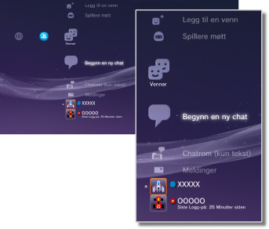

Venner > Kategorien Venner
Kategorien Venner
For å bruke denne funksjonen, må du oppdatere systemprogramvaren.
Send eller motta meldinger eller chat med andre PS3™-brukere over PSNSM. Du må opprette (registrere) en Sony Entertainment Network-konto for å bruke disse funksjonene. Følgende ikoner vises under  (Venner). Ikonene som vises, varierer avhengig av bruksvilkårene.
(Venner). Ikonene som vises, varierer avhengig av bruksvilkårene.

 |
Blokkeringsliste | Vis en liste over personer i blokkeringslisten. |
|---|---|---|
 |
Legg til en venn | Send en forespørsel om å legge til noen i vennelisten. |
| Spillere møtt | Vis en liste over personer du har spilt onlinespill i PlayStation®3-formatet* med. Velg dette ikonet for å sende en melding til en spiller eller for å sende en forespørsel om å legge til en venn. | |
 |
Begynn en ny chat | Start en chat. |
 |
Chatrom (kun tekst) | Dette ikonet vises når det er et chatterom for tekstchatting. Hvis et nytt chatterom er lagt til, vises  . . |
 |
Stemme-/video chatrom | Dette ikonet vises under en stemme-/videochat. |
 |
Meldinger | Opprett nye meldinger, og vis meldinger som du har mottatt og sendt. |
 |
(din online-ID) | Avataren du valgte for kontoen din vises her. |
|
Vennens navn | Dette ikonet indikerer en person i vennelisten din. Ved å velge dette ikonet, kan du sende og motta meldinger eller chatte med venner. |
| * |
Noen spill støtter kanskje ikke denne funksjonen. |
|---|
Tips
- Brukere som er med i vennelisten din på PS3™, kalles venner. E-postmeldinger som du sender eller mottar under (Venner), kalles meldinger.
- Maksimalt 2000 venner kan legges til.
- Maksimalt 100 venner vises.
- Hvis du har mer enn 100 venner, må du logge av og logge på igjen for å oppdatere vennene som vises. Når du gjør dette, logger du også av alle andre enheter som du er logget på PSNSM med.
- Du kan behandle vennene dine fra enheter som PS4™-system, PS Vita-system og smarttelefoner eller andre enheter med PlayStation®-appen installert.
- Opptil 50 spillere kan vises under (Spillere møtt). Etter at denne grensen er nådd, blir den eldste oppføringen automatisk slettet hver gang det legges til en ny spiller.
- For å gjøre en stemmechat, trenger du en lydenhet/utgangsenhet (som en hodetelefon, selges separat). For å chate med video, trenger du et USB-kamera (selges separat).
- Du kan bruke kompatible USB-hodetelefoner / Bluetooth®-hodetelefoner / USB-kamera （EyeToy™) / PlayStation®Eye / USB-kamera som er kompatibelt med USB-videoklasse (UVC) på PS3™-systemet.
- Når du kobler til et USB-kamera med en USB-hub, skal du bruke en hub som støtter USB 2.0. Hvis en hub ikke støtter USB 2.0 som brukes, kan det oppstå kvalitetstap på bilde eller at bildet ikke kan vises.
- For informasjon om støttede periferiutstyr og brukerinstruksjoner, kontakt forhandleren der utstyret ble solgt.